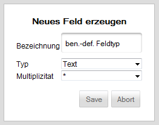

Feld erstellen

Felder werden erzeugt um einem Ticket benutzerdefinierte Felder zuweisen zu können. Das hier systemweit erstellte Feld muss danach auf der Oberfläche Tickettypen-Administration dem entsprechenden Tickettyp zugeordnet werden. Bei der Erstellung muss eine Beschreibung, ein Typ sowie die Multiplizität angegeben werden. Der Typ gibt dabei die Art des Feldes an. Dies kann beispielsweise als ein Textfeld oder ein numerisches Feld definiert werden. Die Multiplizität gibt an, ob lediglich ein Feld oder mehrere Felder dieses Typs definiert werden. Für einen Namen eignet sich beispielsweise die Angabe eines Textfelds mit der Multiplizität "1", für mehrere Hinweise eignet sich ein Feld des Typs "Text" mit der Multiplizität "*".
Created with the Personal Edition of HelpNDoc: Full featured multi-format Help generator